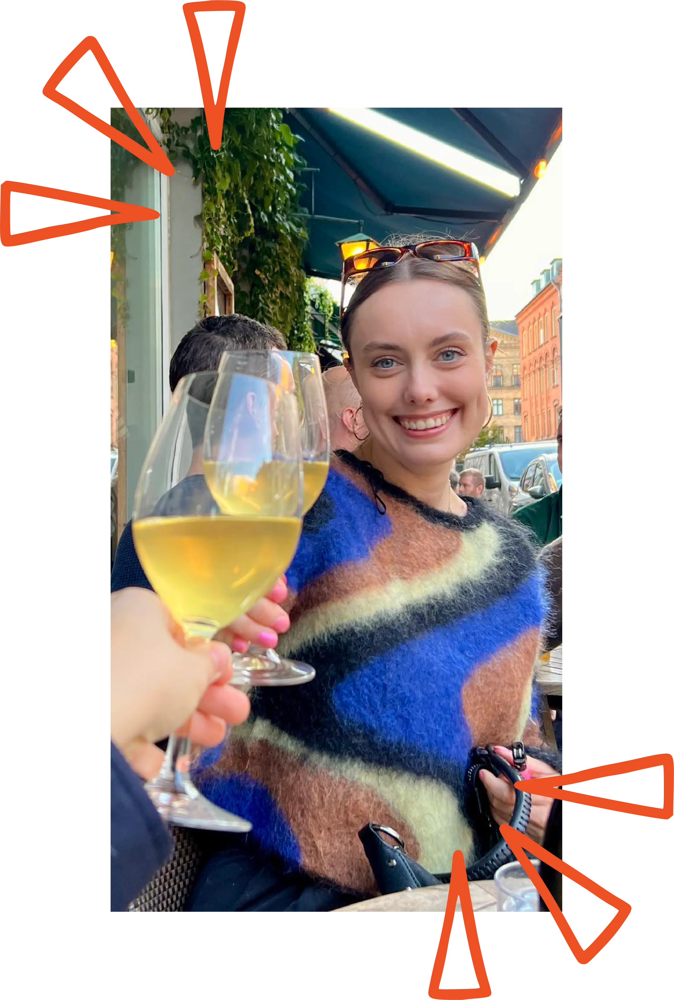

HVEM ER JEG?
Mit navn er Bolette Julie Dreyer Bisgaard. Jeg er bosat i København og er svært glad for kaffe. Jeg vil beskrive mig selv som en nysgerrig og åben person. Jeg er nysgerrig omkring at skubbe til hvad konventionen for design er, hvordan jeg kan udvikle mig på et personligt og fagligt niveau, samt hvordan jeg kan udfolde min opfattelse af designprocessen og opleve den fra nye og spændende vinkler. Derudover synes jeg det er spændende at arbejde med brugerbehov på et funktionelt og æstetisk niveau. Ved at forholde sig til dette, i udviklingen af et design, mener jeg at det er muligt at skabe en positiv forandring for mennesker i deres digitale dagligdag.
Se mit CV →